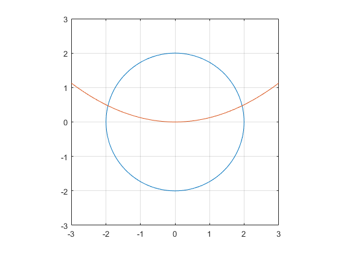
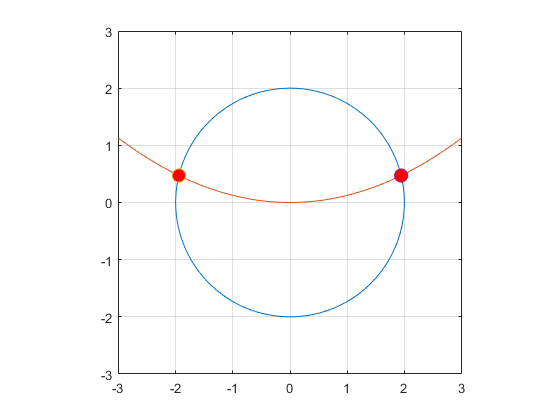

Contents
Algoritmi utilizati
disp('Metoda Newton'); type ('MetNewton.m');
Metoda Newton
function [ xaprox,N ] = MetNewton( F,J,x0,eps )
k=0;
xold=x0;
while 1
k=k+1;
% sistem J(x(k-1))z=-F(x(k-1))
% J(xold)z=-F(xold)
% J(xold(1),xold(2))z=-F(xold(1),xold(2))
% z=J(xold(1),xold(2))\-F(xold(1),xold(2));
z=inv(J(xold(1),xold(2)))*-F(xold(1),xold(2));
xnew=xold+z;
if norm(z,2) < eps
break;
end
xold=xnew;
end
xaprox=xnew;
N=k;
end
EXC 1
Jacobianul sistemului
syms x y; f1=x.^2+y.^2-4; f2=(x.^2)/8-y; Js=[diff(f1,x) diff(f1,y); diff(f2,x) diff(f2,y)]; Js=matlabFunction(Js,'vars',{x,y}); Js(x,y) Jf=jacobian([f1; f2],[x, y])
ans = [ 2*x, 2*y] [ x/4, -1] Jf = [ 2*x, 2*y] [ x/4, -1]
Reprezentarea celor 2 curbe
f1=@(x,y)x.^2+y.^2-4; fimplicit(f1,[-3,3,-3,3]) grid on hold on axis equal f2=@(x,y)(x.^2)/8-y; fimplicit(f2,[-3,3,-3,3]);
Determinarea punctelor de intersectie cu ajutorul metodei Newton
F=@(x,y)[x.^2+y.^2-4;x.^2/8-y] x0=[-2;0]; eps=10^(-6); [r1,N1]=MetNewton(F,Js,x0,eps) x0=[2;0]; [r2,N2]=MetNewton(F,Js,x0,eps)
F =
function_handle with value:
@(x,y)[x.^2+y.^2-4;x.^2/8-y]
r1 =
-1.9435
0.4721
N1 =
4
r2 =
1.9435
0.4721
N2 =
4
Reprezentarea punctelor de intersectie pe graficul curbelor
plot(r1(1),r1(2),'o','MarkerFaceColor','r','Markersize',10); plot(r2(1),r2(2),'o','MarkerFaceColor','r','Markersize',10);